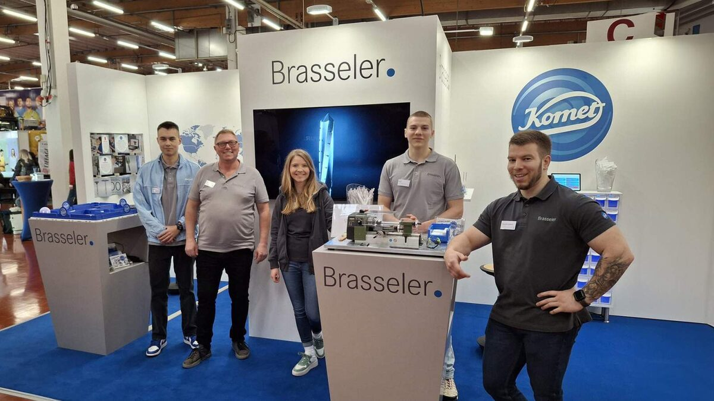
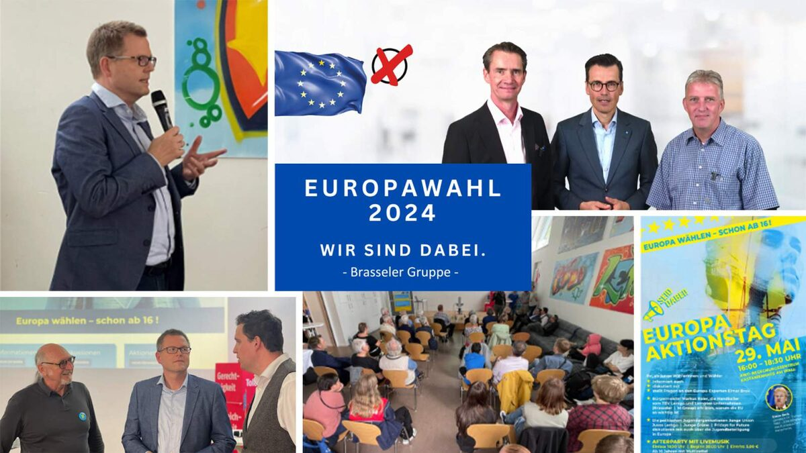
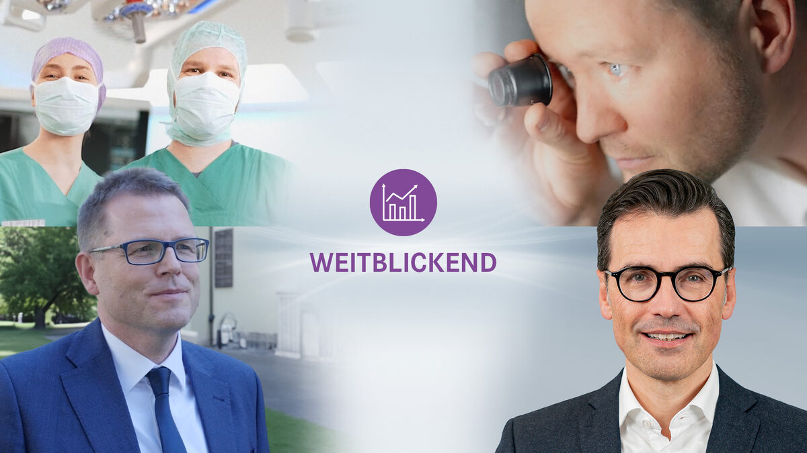
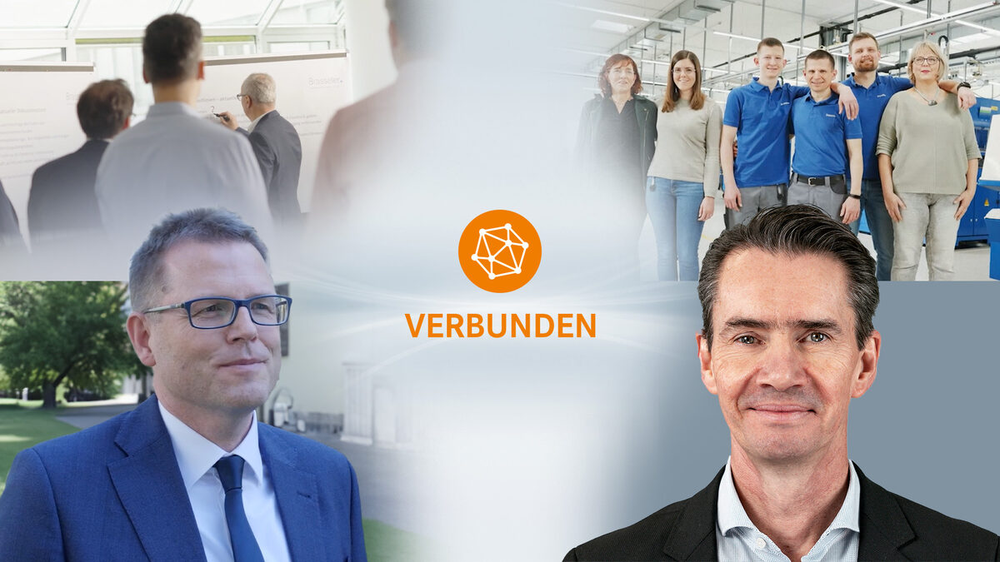
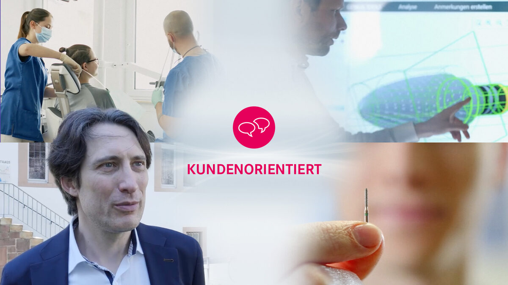
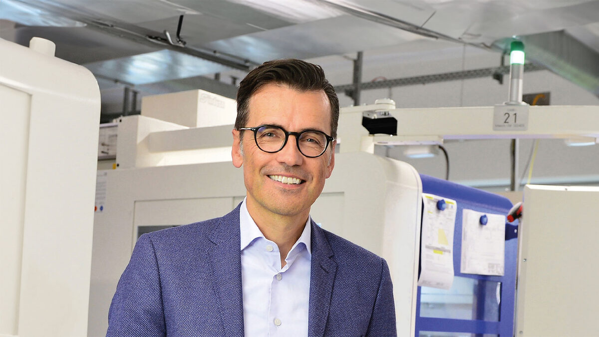
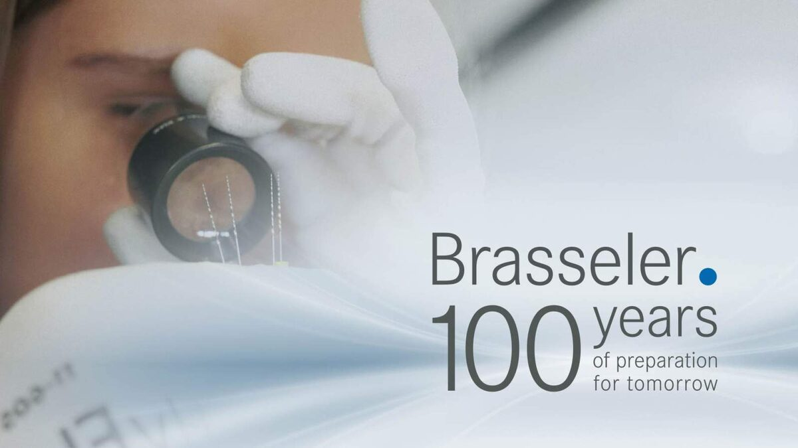
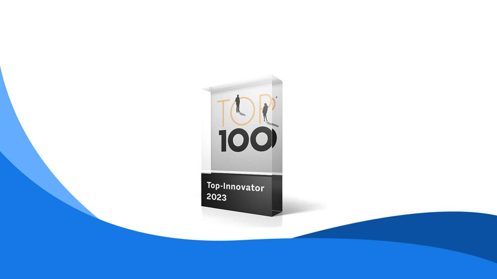
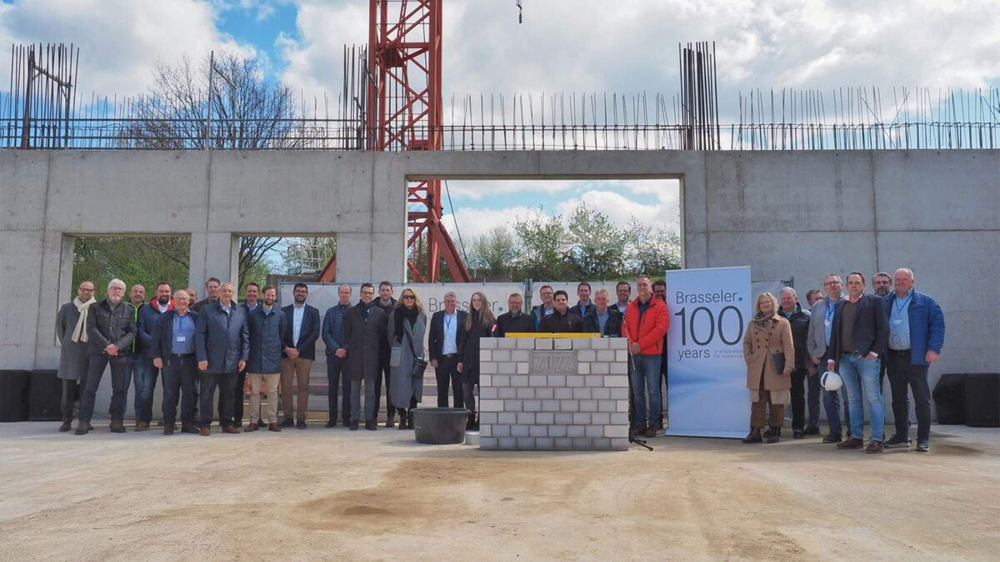

News
63 Beiträge

16.07.2026
Brasseler erhält TOP 100-Auszeichnung in Heidelberg
Brasseler hat seine TOP 100-Auszeichnung im Rahmen des Deutschen Mittelstands-Summit in Heidelberg entgegengenommen. Das Lemgoer Familienunternehmen wurde 2026 bereits zum dritten Mal mit dem renommierten Innovationssiegel ausgezeichnet und zählt damit erneut zu den innovativsten mittelständischen Unternehmen Deutschlands.

07.05.2026
Medizintechnikgruppe Brasseler veröffentlicht vorläufige Ergebnisse des Geschäftsjahres 2025
Die Medizintechnikgruppe Brasseler legt ihre vorläufigen Ergebnisse für das Geschäftsjahr 2025 vor. In einem anspruchsvollen wirtschaftlichen Umfeld erzielte das Unternehmen einen Nettoumsatz von knapp 236 Millionen Euro. Die Umsatzsteigerung lag nach Währungskorrektur bei 1,0 % und blieb damit hinter den Erwartungen zurück. Steigende Kosten, zunehmender Wettbewerb sowie internationale politische Einflüsse prägten die Geschäftsentwicklung im Jahr 2025. Brasseler hat das Jahr genutzt und strategische Initiativen konsequent weiterverfolgt. Diese zeigten erste vielversprechende Ergebnisse in ausgewählten Märkten. In 2026 erwartet das Management weitere positive Impulse für Wettbewerbsfähigkeit, Effizienz und Kundennähe. Die anhaltenden geopolitischen Krisen bergen jedoch Risiken.

13.03.2026
Brasseler erhält zum dritten Mal das TOP 100-Innovations-Siegel
Das MedTech-Unternehmen Brasseler gehört auch 2026 erneut zu den innovativsten mittelständischen Unternehmen Deutschlands. Nach Auszeichnungen in den Jahren 2022 und 2023 erhält das Lemgoer Familienunternehmen zum dritten Mal das renommierte TOP 100-Innovationssiegel.

18.12.2025
121 Weihnachtspäckchen, eine Handpuppe und 3.000 Euro Spende für das Westfälische Kinderdorf Barntrup
Ein starkes Zeichen des Miteinanders: Mitarbeitende von Brasseler haben sich in der Vorweihnachtszeit in besonderer Weise für das Westfälische Kinderdorf Barntrup engagiert. Auf eigene Kosten erfüllten sie die Wunschzettel der Kinder und packten insgesamt 121 Geschenke – so viele wie noch nie zuvor bei der „Weihnachtspäckchenaktion“. Ergänzt wurden die Päckchen durch eine Handpuppe, die im Rahmen von Therapiegesprächen eingesetzt werden kann sowie von Seiten des Unternehmens um einen Betrag von 3.000 Euro für die laufenden Projekte des Westfälischen Kinderdorfs e. V. in Barntrup.

16.12.2025
Vom ersten Arbeitstag bis heute Brasseler verabschiedet Klaus Rübesamen nach mehr als 44 Jahren in den Ruhestand
Nach über vier Jahrzehnten im Unternehmen wurde Klaus Rübesamen, langjähriger Geschäftsführer der Gebr. Brasseler GmbH & Co. KG, in den Ruhestand verabschiedet. Die Veranstaltung am Firmensitz mit vielen externen und internen Gästen in Lemgo bot einen Blick auf eine lange berufliche Laufbahn und auf viele gemeinsame Jahre der Zusammenarbeit.

19.09.2025
Brasseler gewinnt Red Dot Design Award 2025: Innovation mit System
Brasseler setzt ein Zeichen in der Zahnmedizin: Für den neuen EnDrive – eine Entwicklung der Produktmarke Komet Dental – erhält das Lemgoer Familienunternehmen den Red Dot Design Award 2025. Der EnDrive zeigt, dass unter der Marke Komet Dental längst mehr geleistet wird, als klassische Dentalinstrumente herzustellen: Es geht um intelligente Entwicklungen, die den Arbeitsalltag in Zahnarztpraxen erleichtern und Patientinnen und Patienten ein besseres Behandlungsergebnis bieten.

05.09.2025
Ankommen, mitgestalten, wachsen: Ausbildungsstart bei Brasseler
Der August markiert für 15 neue Talente den Einstieg ins Berufsleben bei Brasseler: 13 Auszubildende und zwei dual Studierende starteten mit einer strukturierten Welcome Week. Sie lernten das Unternehmen kennen, erhielten Einblicke in zentrale Abläufe und wuchsen als Gruppe zusammen. Im weiteren Verlauf des Monats vertieften sie ihr Wissen in einem mehrtägigen Praxis-Workshop. So entsteht von Beginn an ein Umfeld, das fachliche Entwicklung und persönliche Orientierung miteinander verbindet.

03.07.2025
Kinder sammeln für Kinder: Brasseler spendet Karussell ans Westfälische Kinderdorf „Lipperland“
551 volle Stempelkarten, 5.510 Euro Spendensumme, ein neues Karussell für den Spielplatz „Spielberg“ im Kinderdorf Lipperland: Das ist die Bilanz einer besonderen Aktion während der Brasseler Familientage 2024. Rund 3.500 Mitarbeitende, Pensionäre und Familienangehörige nutzten am 5. und 6. Oktober die Gelegenheit, das Unternehmen Brasseler kennenzulernen und gemeinsam besondere Momente zu erleben. Die Besucher erkundeten den Brasseler Campus in Lemgo auf verschiedenen Laufwegen und entdeckten dabei die unterschiedlichen Unternehmensbereiche.

16.05.2025
Brasseler Akademie in Lemgo eingeweiht: Talente fördern. Zukunft formen.
Das Familienunternehmen Brasseler hat sein neues Ausbildungszentrum am Unternehmenssitz in Lemgo planmäßig fertiggestellt und offiziell eröffnet. Mit der „Brasseler Akademie“ entsteht eine moderne Lernumgebung, die auf eine zeitgemäße, praxisnahe Ausbildung ausgerichtet ist. Der dazugehörige Leitsatz „Talente fördern. Zukunft formen.“ verdeutlicht den Anspruch von Brasseler, jungen Menschen Perspektiven zu eröffnen und die Weiterentwicklung des Unternehmens sowie der Region nachhaltig zu stärken.

16.04.2025
Tag der Ausbildung 2025 – Deine Zukunft bei Brasseler
Am Samstag, den 17. Mai 2025, öffnen wir von 10:00 Uhr bis 14:00 Uhr unsere Türen für alle, die ihre berufliche Zukunft mit uns gestalten möchten.
27.03.2025
Medizintechnikgruppe Brasseler veröffentlicht vorläufige Ergebnisse des Geschäftsjahres 2024
Die Medizintechnikgruppe Brasseler legt die vorläufigen Ergebnisse für das Geschäftsjahr 2024 vor. Trotz eines herausfordernden wirtschaftlichen Umfelds konnte das Unternehmen eine Umsatzsteigerung von 2,4 % im Vergleich zum Vorjahr erzielen. Dies entspricht einem Nettoumsatz in Höhe von rund 233 Millionen Euro. Während die Voraussetzungen durch steigende Kosten und zunehmenden internationalen Wettbewerb anspruchsvoll bleiben, investiert Brasseler strategisch weiter und intensiviert die Zusammenarbeit mit Kunden und Produktanwendern.

20.03.2025
Brasseler auf der my job OWL – Perspektiven für die Zukunft
Warum lohnt es sich, Brasseler als Arbeitgeber im Blick zu behalten? Weil wir Perspektiven für die Zukunft bieten – für Auszubildende, Berufseinsteiger und Fachkräfte. Auf der Messe „my job OWL“ haben wir genau darüber mit Interessierten gesprochen.

11.02.2025
Brasseler ist neuer Hauptsponsor von Lemgo Marketing
Als Familienunternehmen mit Wurzeln in Lemgo übernehmen wir Verantwortung für unsere Region. 2025 unterstützen wir als ein Hauptsponsor von Lemgo Marketing zahlreiche Stadtfeste und Veranstaltungen, die das Leben in unserer Stadt bereichern.

23.01.2025
Brasseler stärkt internationale Präsenz – Neue Meilensteine im Dentalbereich
Die Medizintechnikgruppe Brasseler treibt ihre globale Wachstumsstrategie konsequent voran. Mit der Gründung einer neuen Vertriebsgesellschaft in Großbritannien und der Eröffnung der Komet Academy in Italien startet das Unternehmen mit bedeutenden Meilensteinen im Dentalbereich ins neue Jahr. Diese Initiativen verdeutlichen, wie Brasseler unter der Marke Komet Dental die Kundennähe weltweit stärkt und sich in der Weiterbildung positioniert.

17.01.2025
Dr. Markus Heibach, Geschäftsführer des VDDI e. V., besucht Brasseler
Wir haben uns sehr gefreut, Dr. Markus Heibach, den Geschäftsführer des Verbandes der Deutschen Dentalindustrie e. V., bei uns zu begrüßen. Anlass war die Übergabe der Verantwortung für die Zusammenarbeit von Klaus Rübesamen an Stephan Köhler.

23.12.2024
Spenden statt Geschenke – Brasseler wünscht frohe Weihnachten
Die Weihnachtszeit ist eine besondere Gelegenheit, innezuhalten und etwas zurückzugeben. Wie in den vergangenen Jahren unterstützen wir mit einer Spende ein besonderes Projekt in der Region.

18.12.2024
Neues Aus- und Weiterbildungszentrum entsteht bei Brasseler in Lemgo
Das Familienunternehmen Brasseler errichtet am Standort Lemgo ein modernes Aus- und Weiterbildungszentrum. Dafür wird ein bestehender Gebäudebereich umfassend umgebaut. Die Bauarbeiten sind bereits in vollem Gange. Die Fertigstellung des Gebäudes ist für das erste Quartal 2025 vorgesehen. Dieses zukunftsorientierte Projekt stellt einen wichtigen Schritt auf dem Weg zu einer modernen und innovativen Lernumgebung innerhalb des Unternehmens dar.

09.10.2024
Gemeinsam in die Zukunft: Brasseler feiert Familientage 2024
Rund 3.500 Mitarbeiter, Pensionäre und ihre Familien besuchten am 5. und 6. Oktober die Familientage des Unternehmens Brasseler. An beiden Tagen verwandelte sich das Betriebsgelände in Lemgo in eine bunte Erlebniswelt, die Jung und Alt zum Staunen und Mitmachen einlud. Die Besucher erlebten das Medizintechnik-Unternehmen hautnah und schufen dabei besondere Erinnerungen mit Kollegen und ihren Familien.

22.08.2024
Medizintechnische Gebr. Brasseler Gruppe veröffentlicht Halbjahres-Ergebnisse 2024
Im Jubiläumsjahr 2023 hat die Brasseler Gruppe ein Rekordergebnis mit einem Umsatzwachstum von 6 % und einem konsolidierten Umsatz von 226,3 Mio. Euro erreicht. Im ersten Halbjahr 2024 stagniert der Umsatz nahezu auf dem Vorjahresniveau. Die Entwicklungen in den Geschäftsfeldern sind unterschiedlich.

19.08.2024
Startschuss für nächste Generation: Ausbildungsjahr bei Brasseler beginnt
Brasseler hat am Standort Lemgo 20 neue Auszubildende begrüßt. Am 1. August haben 13 gewerblich-technische Auszubildende, sechs kaufmännische Auszubildende und ein dualer Studierender ihr Berufsleben begonnen.

05.08.2024
Ein fantastisches Wochenende beim Lippe Open Air
Was für ein großartiges Festival-Wochenende. Wir sind begeistert von der lebhaften Stimmung und der Energie, die das Lippe Open Air erneut in unsere Region gebracht hat. Eines ist sicher: Lippe kann feiern!

25.07.2024
Schlüsselübergabe für neues Gebäude
Die intensive Planungs- und Bauphase unseres neuen Gebäudes am Standort Lemgo mit über 6.000 qm Geschossfläche ist so weit abgeschlossen, dass der Umzug der Produktionsmaschinen starten kann.
16.07.2024
Medizintechnische Gebr. Brasseler Gruppe ernennt neuen Geschäftsführer
Die Medizintechnikgruppe Gebr. Brasseler Lemgo meldet die Ernennung von Herrn Alexander Bartel als Geschäftsführer zum 01.06.2024.

15.07.2024
Brasseler baut Engagement beim TBV Lemgo Lippe deutlich aus
Wir sind stolz darauf, unsere langjährige Partnerschaft als Co-Sponsor mit dem TBV Lemgo Lippe weiter auszubauen und gemeinsam in die nächste Saison zu gehen! Seit über 20 Jahren unterstützt unser Familienunternehmen Brasseler den lippischen Handball-Bundesligisten. Unser Komet Logo wird auch in der kommenden Saison prominent die Trikots der TBV-Spieler zieren. Zusätzlich werden wir mit LED-Banden- und Bodenwerbung im Mittelkreis des Spielfelds präsent sein.

21.06.2024
Erfolgreiche Messe für Komet Medical
Educate. Connect. Empower. Die OMTEC Messe in Chicago ist weltweit die einzige MedTech Konferenz, die sich ausschließlich an die globale Orthopädiebranche richtet.

05.06.2024
Europawahl | Gemeinsam für ein starkes Europa
Unser Familienunternehmen Brasseler engagiert sich seit jeher für das Gemeinwesen – lokal, regional, national und international.

27.05.2024
Europawahl | Es geht uns alle an
Bei der Europawahl am 9. Juni bestimmen wir – jeder einzelne von uns – über unsere Zukunft in Europa und in Deutschland.

22.05.2024
Paneldiskussion | Beyond Bloodlines
Wie kann die Konstellation von Eigentümerfamilie und Unternehmertum mit einem “familienfremden Geschäftsführer” erfolgreich gestaltet werden?

17.05.2024
Podcast | Dentale Familienunternehmen
In der nächsten Episode des Praxisflüsterer-Podcast „Brasseler / Komet – eine Reise durch die Unternehmensgeschichte“ interviewt Christian Henrici Carsten Cieslik, Leiter der Business Unit Komet Dental.

07.05.2024
Brasseler spendet Dental-Instrumente nach Südafrika
Wir als MedTech Unternehmen möchten dazu beitragen, dass sich die Gesundheit der Menschen weltweit verbessert. Wir glauben fest daran, dass unsere Arbeit langfristig einen positiven Einfluss auf die globale Gesellschaft hat.

03.05.2024
Podcast | Dentale Familienunternehmen
Wir waren zu Gast in zwei Episoden des Podcasts „Praxisflüsterer“ von und mit Christian Henrici.
02.05.2024
Azubi-Infotag
Wir öffnen unsere Türen für alle, die ihre berufliche Zukunft mit unseren Ausbildungsmöglichkeiten aktiv gestalten möchten.

30.04.2024
Erfolg, Strategie und Führungsexzellenz
Am vergangenen Mittwoch trafen sich alle Führungskräfte von Brasseler in der Phoenix Contact Arena in Lemgo.

10.04.2024
Teilnahme an der Messe „MyJob“
Welche Möglichkeiten bietet Brasseler als Arbeitgeber? Auf der Messe „MyJob“ wurde diese und viele andere Fragen beantwortet. Im Gespräch mit interessierten Schülern und Fach- und Führungskräften nutzten wir die Gelegenheit, unsere Ausbildungsberufe und aktuelle Stellenangebote zu erläutern.

28.03.2024
Medizintechnische Gebr. Brasseler Gruppe veröffentlicht vorläufige Ergebnisse des Geschäftsjahres 2023
Die medizintechnische Gebr. Brasseler Gruppe legt die vorläufigen Ergebnisse für das Geschäftsjahr 2023 vor, in dem das 100-jährige Bestehen gefeiert wurde.

18.03.2024
Wir handeln mit „Weitblick“
„Wir haben Trends im Blick und sehen die Digitalisierung als Chance, unsere Prozesse und den Arbeitsalltag unserer Kunden nachhaltig zu optimieren.“

12.03.2024
Regierungspräsidentin und Wirtschaftsjunioren zu Besuch bei Brasseler
Die Regierungspräsidentin des Regierungsbezirkes Detmold, Anna Katharina Bölling, war auf Einladung der Wirtschaftsjunioren der IHK Lippe zu Detmold vor kurzem zu Gast bei Brasseler.

04.03.2024
Brasseler rollt Mitarbeiter- und Führungskräfteleitlinien aus
„Die Mitarbeiter- und Führungskräfteleitlinien konkretisieren unsere Werte und zeigen, was sie für unser Miteinander im Arbeitsalltag bedeuten.“ (Björn Hartmann, Bereichsleiter Personal)

29.02.2024
Internationalisierung | APAC Dealer Meeting
„In love with better“ – Unter diesem Motto fand das erste APAC Dealer Meeting unserer größten Business Unit Komet Dental in diesen Tagen in Phuket, Thailand statt. Die Veranstaltung ist ein wichtiger Baustein, um im engen Austausch mit unseren lokalen Partnern unsere internationale Wachstumsstrategie in Asien und Pazifik auszugestalten.

19.02.2024
Was bedeutet unser Wert „Verbunden“?
Unsere Unternehmenskultur und Werte leiten unsere Haltung, Entscheidungen und Handlungen bei Brasseler. Seit Gründung unseres Unternehmens spielen Werte eine maßgebliche Rolle und werden von jeder Generation für die Herausforderungen der Zeit weiterentwickelt und interpretiert. Unsere fünf Werte sind unter Beteiligung von Mitarbeitenden entstanden.

14.02.2024
Werte sind unser Fundament
Unsere Werte spiegeln unser Verständnis eines Familienunternehmens wider. Sie sind ein wesentlicher Bestandteil unserer Unternehmensphilosophie und bilden die Grundlage unseres Handelns.
07.02.2024
Reorganisation und Führungswechsel in den Geschäftsbereichen Komet Dental und Komet Medical der Medizintechnikgruppe Gebr. Brasseler Lemgo
Die Medizintechnikgruppe Gebr. Brasseler Lemgo meldet zum Jahresbeginn einen Führungswechsel in den Geschäftsbereichen Dental und Medical. Die Änderungen sind die Folge einer organisatorischen Neuausrichtung: Der Geschäftsbereich Komet Medical wird strategisch um die Expertise Dental Implantology erweitert. Die bisher für dieses Feld verantwortliche Business Unit „Custom Made“ wird mit der Business Unit Medical fusioniert. Ziel des Familienunternehmens ist, Kernkompetenzen zu bündeln, die positive Marktentwicklung in der Knochenchirurgie und der dentalen Implantologie voranzutreiben und effektiv auf sich ändernde Kundenbedürfnisse einzugehen.

25.01.2024
National Sales Meeting Komet USA
„𝗟𝗲𝘁’𝘀 𝗮𝗰𝗵𝗶𝗲𝘃𝗲 𝗴𝗿𝗲𝗮𝘁 𝘁𝗵𝗶𝗻𝗴𝘀 𝘁𝗼𝗴𝗲𝘁𝗵𝗲𝗿!“ – so eröffnete Stephan Köhler, Sprecher der Geschäftsführung, vergangene Woche seine Rede auf der diesjährigen Vertriebsversammlung von Komet USA in Charlotte. Gemeinsam Ziele definieren, die Wachstumsstrategie umsetzen und den internationalen Erfolg vorantreiben – die diesjährige Auftaktveranstaltung war ein wichtiger Meilenstein.

20.12.2023
Schöne Feiertage
Ein ereignisreiches Jahr neigt sich dem Ende zu. Wir möchten unseren herzlichen Dank aussprechen, dass Sie uns durch unser Jubiläumsjahr begleitet haben – 100 𝘠𝘦𝘢𝘳𝘴 𝘰𝘧 𝘗𝘳𝘦𝘱𝘢𝘳𝘢𝘵𝘪𝘰𝘯 𝘧𝘰𝘳 𝘛𝘰𝘮𝘰𝘳𝘳𝘰𝘸 war ein wichtiger Meilenstein für uns.

11.12.2023
Unser Weg zum Weltmarktführer in der Dentalindustrie
Im aktuellen Short der Reihe „Insights Brasseler“ vermittelt unser Geschäftsführer Klaus Rübesamen, wie wir uns mit unserer Produktmarke Komet zu einer weltweit führenden Marke entwickelt haben.

03.12.2023
„Leaders Talk“ – Stephan Köhler im Interview mit WIR | Wirtschaft Regional
Das Wirtschaftsmagazin WIR | Wirtschaft Regional berichtet in der aktuellen Reihe „Leaders Talk“ in einem Interview mit Stephan Köhler über unser Familienunternehmen, die Bedeutung unserer Marke Komet und über die Person Stephan Köhler, Sprecher der Geschäftsführung.

13.11.2023
Gemeinsam in Lemgo und der Region
Seit vielen Jahrzehnten sind wir in Lemgo beheimatet und haben uns zu einem der größten regionalen Arbeitgeber entwickelt.

06.11.2023
Richtfest für Neubau in Lemgo
Am 20. Oktober haben wir einen weiteren, wichtigen Meilenstein in diesem Jahr erreicht: das Richtfest unseres neuen Firmengebäudes „Gebäude 2022“ in Lemgo.

19.10.2023
Bei Brasseler macht der Mensch den Unterschied.
Stephan Köhler, Sprecher der Geschäftsführung, erläutert, was hinter unserem Selbstverständnis „Der Mensch macht den Unterschied“ steckt und warum wir dies als tägliche Herausforderung sehen.

26.09.2023
Besuch bei Komet Italia
Unsere Gesellschafterinnen, die Mitglieder unseres Beirates sowie unsere Geschäftsführung, Stephan Köhler, Klaus Ruebesamen und Markus Trachternach, besuchen in dieser Woche unsere Niederlassung Komet Italia in Verona. Der Besuch ist eine Anerkennung des großartigen Engagements unserer italienischen Kolleginnen und Kollegen und ihres exzellenten Beitrags zum Erfolg unserer Gruppe.

20.09.2023
Brasseler startet Content-Kampagne „Insights Brasseler“
In den kommenden Wochen und Monaten werden wir tiefer in die Welt von Brasseler eintauchen und Ihnen besondere Einblicke in unser Unternehmen geben.

05.09.2023
Eventfilm 100 Years
Was vereint 100 Jahre Erfolgsgeschichte mit der Zukunft? Unser Brasseler Jubiläumsjahr.

25.08.2023
Halbjahres-Ergebnisse 2023 und Investitionspläne für Lemgo
Die medizintechnische Gebr. Brasseler Gruppe legt die Ergebnisse des ersten Halbjahres 2023 vor.

09.08.2023
Brasseler sponsert Haupt-Act Nico Santos bei Lippe Open Air
Das war ein aufregendes Wochenende – und ein weiteres Highlight in unserem 100-jährigen Jubiläumsjahr!

23.06.2023
TOP 100-Preisverleihung: Brasseler nimmt Auszeichnung entgegen
Wir sind erneut mit dem Innovations-Siegel TOP 100 ausgezeichnet worden und zählen auch im Jahr 2023 zu den innovativsten mittelständischen Unternehmen in Deutschland!

19.06.2023
Brasseler begeistert Jugendliche bei Infotag über Ausbildungsberufe
Am Freitag, den 16. Juni, öffneten wir unsere Türen, um Schülerinnen und Schülern aus der Region einen umfassenden Einblick in die vielfältigen Ausbildungsberufe unserer Branche zu ermöglichen. Der Infotag war ein großer Erfolg – Wir begrüßten zahlreiche interessierte Jugendliche und ihre Eltern auf dem Lemgoer Firmengelände.

24.05.2023
Erweiterter Führungskreis legt Grundstein für weiteres gesundes Wachstum bis 2026
Ein erfolgreiches Unternehmen braucht klare Ziele, gute Strategien und – davon sind wir besonders überzeugt – den offenen Austausch. Um Bestehendes zu optimieren und Zukünftiges zu gestalten. Um zu führen, zu motivieren und zu entscheiden.

17.05.2023
Brasseler veröffentlicht neuen Imagefilm
Bereit, die Welt unseres Unternehmens zu entdecken? Wir freuen uns, Ihnen heute unseren neuen Imagefilm zu präsentieren und nehmen Sie auf eine emotionale Reise voller Innovation, Leidenschaft und Erfolg mit. Unser Imagefilm zeigt Ihnen, was uns antreibt und auszeichnet.

15.05.2023
Großes Jubiläum: Brasseler feiert 100 Jahre
„100 Years of Preparation for Tomorrow“ – Unter diesem Motto haben wir uns bei Brasseler einiges für unser Jubiläumsjahr einfallen lassen: weltweite Feierlichkeiten an den Firmenstandorten, Spendenaktionen, das Sponsoring eines Musikfestivals in OWL, einen neuen Imagefilm, eine Jubiläumsfeier mit Themenwelten aus 100 Jahren Firmengeschichte und den Festakt im Beisein der Inhaberfamilie.

08.05.2023
Brasseler erhält erneut Auszeichnung für Innovationsarbeit
Mit der Auszeichnung als TOP 100-Innovator zählen wir auch im Jahr 2023 zu den besonders innovativen Mittelständlern in Deutschland. „Innovationen sind Teil unserer Unternehmens-DNA und der Schlüssel zu langfristigem Erfolg“, sagt Stephan Köhler, Sprecher der Geschäftsführung.

27.04.2023
Feierliche Grundsteinlegung: Ausbau des Brasseler Firmensitzes in Lemgo
Am 27. April 2023 haben wir den Grundstein für ein weiteres Gebäude auf unserem Brasseler Campus in Lemgo gelegt. Unter Anwesenheit von Anke Niehus, Hauptgesellschafterin und Vertreterin der Inhaberfamilie, des Architekten Oliver Stüwe sowie unserer Geschäftsführung und unseren Mitarbeitenden feierten wir diesen wichtigen Meilenstein, der die strategische Entwicklung der Wertschöpfung am Standort Lemgo verdeutlicht.

06.04.2023
Förderung digitaler Kompetenzen: Brasseler richtet PopUp-Campus der Digital Business University aus
In Kooperation mit der DBU Digital Business University of Applied Sciences bieten wir bei Gebr. Brasseler die Möglichkeit, sich zu Digitalexperten fortzubilden. Unser Förderprogramm unterstützt ausgewählte Mitarbeitende dabei, berufsbegleitend zu studieren – virtuell und in Präsenzveranstaltungen. Vom 30. März bis 01. April waren wir Gastgeber des DBU PopUp-Campus zum Thema „Führung im digitalen Zeitalter“ und konnten in unserem Firmensitz in Lemgo Studierende und Unternehmen aus ganz OWL begrüßen. Der PopUp-Campus ist Teil der Präsenzveranstaltungen der berufsbegleitenden, semi-virtuellen Studiengänge, die wir im Rahmen unserer Personalentwicklung anbieten.
02.03.2023
Brasseler leistet 100.000 Euro Soforthilfe für die Opfer der Erdbebenkatastrophe
Lemgo, 03.03.2023 – Das MedTech Unternehmen Gebr. Brasseler GmbH & Co. KG hat 100.000 Euro Soforthilfe für die Erdbebenopfer in der Türkei und in Syrien geleistet. Darüber hinaus verdoppelt Brasseler die Spenden seiner Mitarbeiter:innen.

Pressekontakt
Melanie Köhler
Unternehmenskommunikation
Telefon +49 (0) 160 3447748
presse@brasseler.de